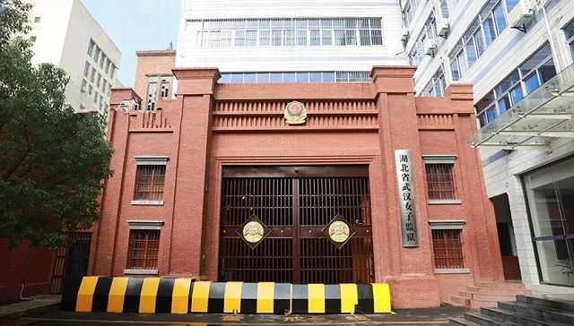

黄某英如何离汉进京的？官方公布调查结果
原文链接 备份链接 是一起因失职渎职导致的严重事件 【联合调查组公布“黄某英事件”调查结果】2月26日，经中央政法委批准，司法部牵头，会同中央政法委、最高人民检察院、公安部组成联合调查组。2月27日，联合调查组赶赴湖北，在湖北省调查组 …

图片来源：央视新闻客户端。
本文来源：央视新闻客户端
“
“黄某英事件”是一起因失职渎职导致的严重事件，性质恶劣，影响极坏，给首都疫情防控工作带来极大隐患。
”
2月26日，经中央政法委批准，司法部牵头，会同中央政法委、最高人民检察院、公安部组成联合调查组。2月27日，联合调查组赶赴湖北，在湖北省调查组的密切配合下，就武汉女子监狱刑满释放人员黄某英感染新冠肺炎离汉进京事件进行调查。3月2日，联合调查组公布调查结果，认为，“黄某英事件”是一起因失职渎职导致的严重事件，性质恶劣，影响极坏，给首都疫情防控工作带来极大隐患。
（1）黄某英为何能离开武汉？
2月21日，武汉女子监狱刑满释放人员黄某英感染新冠肺炎离汉进京事件引起社会广泛关注。黄某英如何能够离开武汉？如何能够进入北京？
今年61岁的黄某英，女，湖北省恩施土家族自治州宣恩县人，原系湖北省宣恩县水利水产局财务股副股长兼出纳。2014年2月18日因犯贪污罪，被恩施土家族苗族自治州中级人民法院判处有期徒刑10年，服刑期间，两次减刑共14个月。刑期自2011年4月18日起至2020年2月17日止。2月17日之前，新冠肺炎已经在湖北爆发，黄某英居住湖北恩施的弟弟、居住北京的女儿与监狱联系黄某英刑满释放事宜，他们均表示由于交通管制等原因，不能来武汉接黄回家。因黄某英服刑的监区有干警确诊为新冠肺炎或疑似病例，黄属于密切接触人员。2月17日，黄某英刑满释放后，留在武汉女子监狱隔离观察。
2月17日至21日上午，监狱为黄某英测量体温13次，其中18日、19日两次体温为37.3°C。期间，黄某英再三找干警，要求回家。干警与其女儿联系，其女儿表示想办法解决。后干警与其女儿前夫约定于2月21日上午，由监狱将黄某英送至武汉北高速收费站口交其接走。
2月21日早上，干警将隔离观察的黄某英带到监狱门口，对其宣讲有关防疫规定，并要求其写下出狱后居家隔离14天的保证书。干警将黄带出监狱，乘鄂牌依维柯警车到武汉北高速收费站外广场，步行将黄送至卡口。当时，同车还有一名孝感籍刑满释放人员李某，也在该收费站交给其儿子带回孝感，目前李某及其密切接触者共4人，均在当地指定地点隔离。此前，黄某英家属已与卡口执勤公安干警说明来意，在卡口外等候。当时执勤的武汉市东西湖区公安分局长青街派出所公安干警未按要求对黄某英履行查控职责，将其放行。
黄某英和女儿及其女儿前夫驾乘京牌私家车，于2月21日11：30分进入京港澳高速，2月22日凌晨到达北京，24日黄某英被确诊为新冠肺炎。
（2）事件根源在湖北省司法厅和湖北省监狱局
联合调查组认为，“黄某英事件”虽然发生在武汉女子监狱，但根源在湖北省司法厅和湖北省监狱局。
——湖北省司法厅领导不力，政治意识、责任意识淡薄。对党中央决策部署理解不深不透，对省监狱局的管理流于形式。没有对省监狱局所发文件进行严格审核把关即将其呈报省委政法委审批，且在省委有关领导作出明确批示后，仍未及时纠正省监狱局错误，导致湖北省监狱系统政策执行出现严重问题，与湖北省乃至全国疫情防控措施背道而驰。
——湖北省监狱局管理不力，政治意识、大局意识、法治意识严重缺失。对党中央决策部署、湖北省委省政府防控举措和司法部的明确要求选择性执行，毫无大局观念，没有自觉把监狱防疫纳入国家防疫工作大局，无视湖北省委有关领导批示要求和司法部的明确规定，导致上级相关工作要求没有贯彻落实。
——武汉女子监狱工作不力，内部管理、制度执行混乱。武汉女子监狱在明知黄某英系密切接触者并出现体温异常的状态下，没有落实司法部关于发热1小时必须报告和严格执行14天隔离的制度，仍与黄某英在京亲属联系，并用警车将黄送至城外高速路口，导致其进入北京，造成疫情在北京扩散的极大风险。
——武汉市东西湖区公安分局管控不力，工作态度、纪律作风不实。公安分局对负责卡口管控的干警教育不够、要求不严，督促检查不到位，导致干警工作懈怠，麻痹大意，对车辆和人员出入武汉核查不严。
（3）严肃追究相关人员责任
联合调查组到达湖北后，立即严格依法依规依纪开展调查核实工作，对接湖北省委、省纪委监委，与湖北省司法厅、监狱局负责同志个别谈话，深入武汉女子监狱和武汉市区有关卡点调查询问，收集资料，固化证据，查清了黄某英事件经过。
联合调查组认为，对于黄某英事件，湖北省司法厅负领导责任，省监狱局负主要责任，武汉女子监狱负直接责任，武汉市东西湖区公安分局履行查控职责不到位，应依法依规依纪严肃追究相关人员责任。
联合调查组将调查发现问题转湖北省有关方面依法依规依纪处理，并提出了初步处理建议。
（4）坚决堵住监所疫情外防输出的漏洞
“黄某英事件”教训十分深刻。司法部1月30日就刑释人员安置工作印发紧急通知，明确规定监狱应告知罪犯疫情现状和防疫要求，并通过罪犯户籍地司法局做好家属工作，劝导罪犯服从防疫安排；对隔离观察期间刑满的人员，监狱在办理释放手续后，应将其安置在监管区域外继续隔离观察。但这些措施没有得到严格落实，导致刑释人员带病毒出监，严重影响了整个疫情防控大局。
为此，司法部进一步严格措施，先后派出28个督导组，对全国各地监狱戒毒场所防疫措施落实、刑释人员安置情况开展督导。部领导每日通过视频调度检查各地监所疫情防控外防输入、内防扩散、外防输出工作落实情况。各地切实引以为戒，扎实落实措施，坚决堵住监所疫情外防输出的漏洞，对所有罪犯在刑满释放前都进行14天隔离观察。对距刑满不足14天的，在依法办理刑满释放手续后，沟通协调有关部门将其安排在特定场所继续隔离观察，直至满14天为止。对湖北省各监狱、山东省济宁市域内监狱、浙江省衢州市域内监狱刑满人员，在依法办理释放手续后，协调有关部门一律安排在特定场所隔离至疫情结束。对户籍地为北京的刑满释放人员，无缝对接监狱所在地安置帮教部门，一律在当地临时安置至疫情结束，严防疫情输入北京。
— END —
点击图片查看相关内容


原文链接 备份链接 是一起因失职渎职导致的严重事件 【联合调查组公布“黄某英事件”调查结果】2月26日，经中央政法委批准，司法部牵头，会同中央政法委、最高人民检察院、公安部组成联合调查组。2月27日，联合调查组赶赴湖北，在湖北省调查组 …
原文链接 备份链接 联合调查组认为，“黄某英事件”虽然发生在武汉女子监狱，但根源在湖北省司法厅和湖北省监狱局 《财经》综合报道 仅用5天时间，感染新冠肺炎的刑满释放人员黄某英，如何在层层封锁之下从武汉回到北京？3月2日，司法部牵头，会同中 …
原文链接 备份链接 【财新网】（记者 苑苏文 覃建行 王梦遥）疫情严控之下，2月22日凌晨2时，自武汉女子监狱刑满释放的黄女士进入北京，之后被确诊为新冠肺炎病例。公众普遍质疑，其是如何离开武汉，又是怎样达到北京的？ 财新记者获悉，黄女士刑 …
原文链接 备份链接 2月26日，北京发布一例新冠肺炎确诊病例信息引发舆论关注。北京市东城区崇外街道新怡家园社区居委会通过微信公众号发布确诊病例提示，称H女士2月22日从武汉来京，当日被隔离检查，3名亲属已进行集中隔离医学观察，并由区疾控中 …
原文链接 备份链接 黄女士及其家人是如何“顺利完成进京全流程”的？当前是否存在更多的“黄女士”？这些令人疑惑的问题，有待一天之内即迅速成立的三个调查组，还公众合理合法的结论。 文 | 王仲昀 Anne 2月26日，北京发布的一例由武汉返京 …